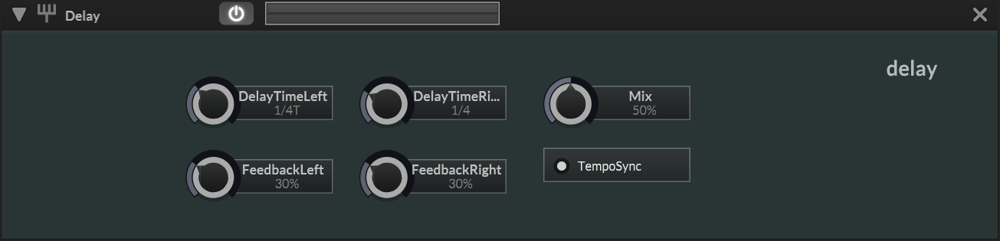

Delay

A stereo delay effect with independent left and right delay times, per-channel feedback, and a dry/wet mix. Delay times can be set in milliseconds or locked to the host tempo via TempoSync. The delay lines use integer-sample delay only (no fractional interpolation) and apply a built-in 1024-sample crossfade when the delay time changes to prevent clicks.
The dry/wet mix uses an overlap fader (scriptnode faders::overlap): at Mix = 0.5, both dry and wet signals are at full volume (1.0). At the extremes, one fades to zero while the other stays at full level. The first audio buffer after construction is skipped entirely to avoid garbage output.
Signal Path
Parameters
| Parameter | Description | Range | Default |
|---|---|---|---|
| Delay Time | |||
| DelayTimeLeft | Left channel delay time in milliseconds, or tempo-synced note value when sync is enabled | 0 - 3000 ms | (dynamic) |
| DelayTimeRight | Right channel delay time in milliseconds, or tempo-synced note value when sync is enabled | 0 - 3000 ms | (dynamic) |
| TempoSync | Enables tempo-synced delay times instead of milliseconds | On / Off | On |
| Feedback | |||
| FeedbackLeft | Left channel feedback amount (0.0 = no repeats, 1.0 = infinite) | 0 - 100% | 30% |
| FeedbackRight | Right channel feedback amount (0.0 = no repeats, 1.0 = infinite) | 0 - 100% | 30% |
| Filtering (Vestigial) | |||
| LowPassFreq | Low-pass cutoff frequency - defined and serialized but never applied (no filter objects exist) | 20 - 20000 Hz | 20000 Hz |
| HiPassFreq | High-pass cutoff frequency - defined and serialized but never applied (no filter objects exist) | 20 - 20000 Hz | 40 Hz |
| Mix | |||
| Mix | Dry/wet balance using overlap fader (at 50% both signals are at full volume) | 0 - 100% | 50% |
Notes
LowPassFreq and HiPassFreq are vestigial parameters - they are defined in the parameter enum and serialized to presets, but never applied in applyEffect() because no filter objects exist in the class. Setting them has no audible effect.
The overlap fader mix behavior is non-standard: at Mix = 0.5, both dry and wet are at full volume (gain = 1.0), resulting in a +6dB boost. For equal-power mixing behavior, use a scriptnode network instead.
When TempoSync is enabled, the delay time sliders switch from millisecond values to tempo-synced note value indices. The crossfade on time changes (1024 samples) prevents clicks but means very fast automation of delay time will be smoothed.